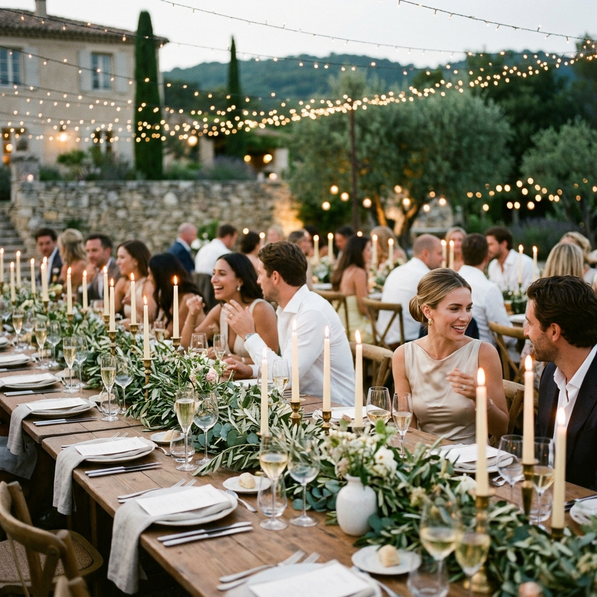
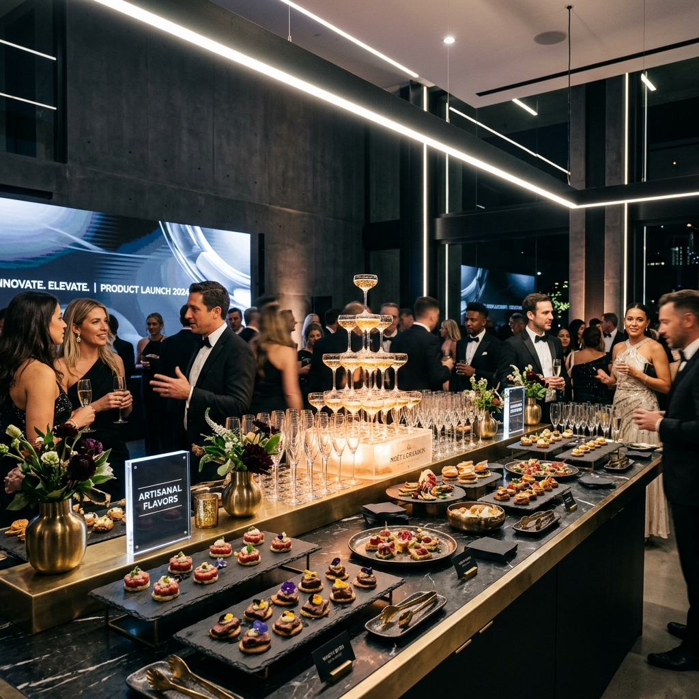

The Ledgers of Praise
Client Testimonials
Reflections from hosts, partners, and couples who journeyed through our culinary scenographies.
Cinematic Reels
Film Diaries
Behind-the-scenes interviews with hosts and organizers, captured live during event wrap-ups.

▶
Château de Tourreau
Charlotte & Pierre's Wedding Film
Duration: 3m 45s • High-definition recap of the culinary timeline setup.

▶
Milan Design Week
The Avant-Garde Brand Activation
Duration: 2m 10s • Interviews with architects and brand representatives.